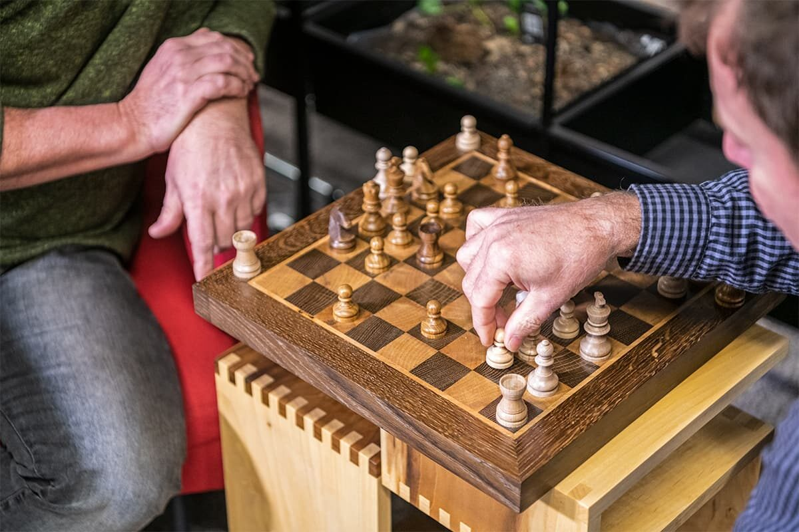

Chess is a super fun game where two players battle it out using cool pieces like kings, queens, and knights on a checkered board. It's all about thinking ahead, making smart moves, and maybe even tricking your opponent! Whether you're just playing for fun or trying to get really good, chess is a great way to challenge your brain and have a good time.


Chess isn't just a game; it's something that can actually help you in daily life. When you play chess, you learn how to think ahead, make smart decisions, and stay focused, which are all skills you use every day, whether it's in school, sports, or solving problems. It also teaches patience and how to handle wins and losses, helping you stay calm under pressure. Chess improves your memory and concentration too, making it easier to learn new things. Overall, it trains your brain to think more clearly and strategically, which can give you an advantage in real-life situations.
Chess is also a great way to connect with people and challenge yourself at the same time. It brings together players of all ages and skill levels, whether you're playing with friends, online, or in tournaments. The game is always changing, so no two matches feel the same, which keeps it exciting and engaging. Over time, players develop their own style—some prefer aggressive attacks, while others focus on strong defense. This makes chess not just a game of logic, but also a form of self-expression.